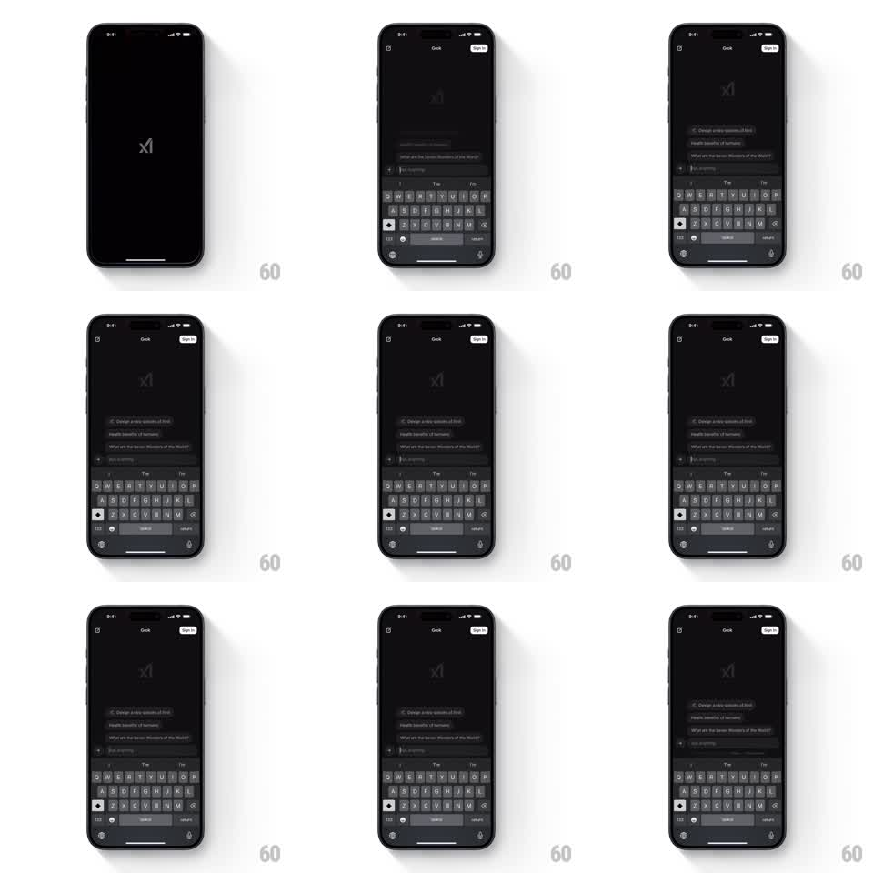

Media
Frame-by-frame

Rebuild this interaction 1:1: Grok's launch screen - the logo and UI appear first, and the small terms-and-privacy disclaimer line fades in last, after a deliberate delay.

Rebuild this interaction 1:1: Grok's launch screen - the logo and UI appear first, and the small terms-and-privacy disclaimer line fades in last, after a deliberate delay. ## Integration Integration: stack-agnostic spec - springs given as stiffness/damping, timed motions as duration + curve; map every value to your framework and animation library of choice. ## Scene Dark Grok screen: centered logo, "Grok" header with a Sign Up pill, an "Ask Anything" input above the docked keyboard, and a small grey disclaimer line under the input. ## Motion spec Pattern: delayed legal-text fade, ~1.2s. - The launch screen assembles immediately: logo, header, input, and keyboard are all present from the first frame. - The disclaimer line under the input starts fully transparent, waits ~400ms, then fades in slowly (600ms, ease-out) to its muted grey resting opacity. - The fade is the only motion; nothing slides, scales, or pulses. - The line holds once arrived - no shimmer or further state change. ## Calibration - The delay is the point: the disclaimer must arrive noticeably after the UI, not with it. - Resting opacity is muted - it should read as secondary text, never competing with the input. ## Reduced motion Disclaimer appears with the rest of the UI. ## Don't miss - The fade is long and even; a quick fade reads as a render pop, not an entrance. - The keyboard is already up during the fade - the disclaimer animates over a live, ready screen.